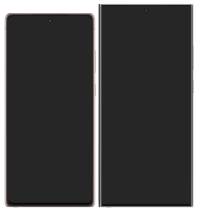

Galaxy NOTE20
The Samsung Galaxy Note 20 and Galaxy Note 20 Ultra (stylized and marketed as Samsung Galaxy Note20 and Galaxy Note20 Ultra) are Android-based phablets designed, developed, produced, and marketed by Samsung Electronics for their Samsung Galaxy Note series, succeeding the Samsung Galaxy Note 10 series.[2][3][4][5] The phablets were announced on 5 August 2020 alongside the Samsung Galaxy Z Fold 2, Galaxy Watch 3 , Galaxy Buds Live and Samsung Galaxy Tab S7 during Samsung's Unpacked Event..
